The Problem
En-route controllers must keep aircraft at least 5 NM apart horizontally or 1,000 ft apart vertically. Today they judge that by mentally comparing positions, headings and numbers in each aircraft’s data block, and by predicting where two aircraft will be minutes from now. The FAA’s ERAM system adds a Conflict Alert that flashes both data blocks about 2.5 minutes before a predicted loss of separation, but the alert is on or off and does not show where or why the conflict will happen.
I designed a configural display that turns that judgment into something seen rather than calculated. Position, track, ground speed, altitude and vertical rate for two aircraft combine into one shape that builds gradually as risk increases, while every one of the five variables stays traceable on screen.
Real OpenSky traffic around IAD and DCA. Conflict A (UAL1484 and synthetic DAL2214) builds to a predicted loss of separation; Conflict B (NKS140 and RPA4581) appears and then resolves.
My role: individual project. I selected and filtered the data, designed every element, built all seven Figma frames and their Smart Animate transitions, and wrote the risk calculation that drives the feature.
Designing for Three Questions
Each element of the display answers one of three questions an en-route controller asks continuously.
Where is everyone?
Know where every aircraft is, where it is heading and at what altitude. Answered by the glyph and data block.
Is a conflict forming?
Spot a developing conflict early, before a loss of separation. Answered by the feature’s faint early stages.
How urgent, and why?
Judge urgency and whether the problem is horizontal, vertical or both. Answered by color, the time ring, the circles and the tags.
Real Traffic, Precisely Placed
The display uses real ADS-B state vectors from the OpenSky Network for 1 July 2019. My first data set, 08:00 UTC, held only five aircraft because it was 4 a.m. locally; switching to 20:00 UTC (4 p.m.) gave 19 to 25 aircraft on screen at once, enough for traffic patterns to emerge.
Window
20:09:50 to 20:17:50 UTC, the busiest stretch of the hour, in seven frames: 2-minute steps, then 1-minute steps while the conflict builds.
Filters
Above FL180 (en-route traffic), airborne, positions no more than 15 seconds old, within 50 NM of the IAD/DCA midpoint.
Build
A spreadsheet converted every position to Figma coordinates (8 px per NM). Reusable Symbol and Data block components, matched across frames by ICAO code, glide between frames with Smart Animate.
Synthetic aircraft
No real pair lost separation, because real traffic is controlled. One synthetic aircraft, DAL2214, creates a full conflict with real UAL1484. It looks identical to real traffic, so it does not give the conflict away.
How the Five Variables Become One Risk Score
Each pair is projected forward assuming constant track, ground speed and vertical rate. Within a 7-minute look-ahead, the moment of closest approach gives a predicted horizontal gap and vertical gap. Three factors, each from 0 to 1, are multiplied, so risk is only high when the aircraft will be close in both dimensions, and soon.
| Factor | Rises from 0 at… | …to 1 at |
|---|---|---|
| Predicted horizontal gap | 15 NM | 5 NM (the separation standard) |
| Predicted vertical gap | 3,000 ft | 1,000 ft (the separation standard) |
| Time to closest approach | 7 minutes | 1 minute |
Stages begin at risk 0.2, 0.4, 0.6 and 0.8. Stage 4 also requires a predicted loss of separation: under 5 NM and under 1,000 ft.
Concepts Applied
Five concepts from Bennett and Flach (2011) and course lectures shape every element. Each maps to specific parts of the display.
| Concept | Applied as |
|---|---|
| Emergent features, at three levels | Global: parallel track lines form traffic streams. Intermediate: projection lines close into a “V”, circles overlap, tags converge and the ring tightens. Local: dot, line, size and color form one aircraft glyph. |
| Semantic mapping (domain, display, agent) | Each protected circle has a 2.5 NM radius, so two circles touch at exactly 5 NM. The outline turns solid only when both gaps fall below the standards, mirroring the rule that both must be lost for a loss of separation. |
| Proximity compatibility principle | Judging a conflict means integrating ten values (five variables × two aircraft), so every conflict element shares one place, one color and a physical connection. Details used for single-aircraft checks stay in separate data blocks. |
| Analogical format | The scope is a scaled map (8 px per NM, rings every 10 NM). Projection length is distance flown, circle overlap is the horizontal gap and ring size is time remaining. Data blocks stay propositional for exact values. |
| Redundant coding and salience | Altitude is coded by color and dot size. Urgency is coded by color (yellow to red), opacity and ring size, so salience rises only as risk rises. |
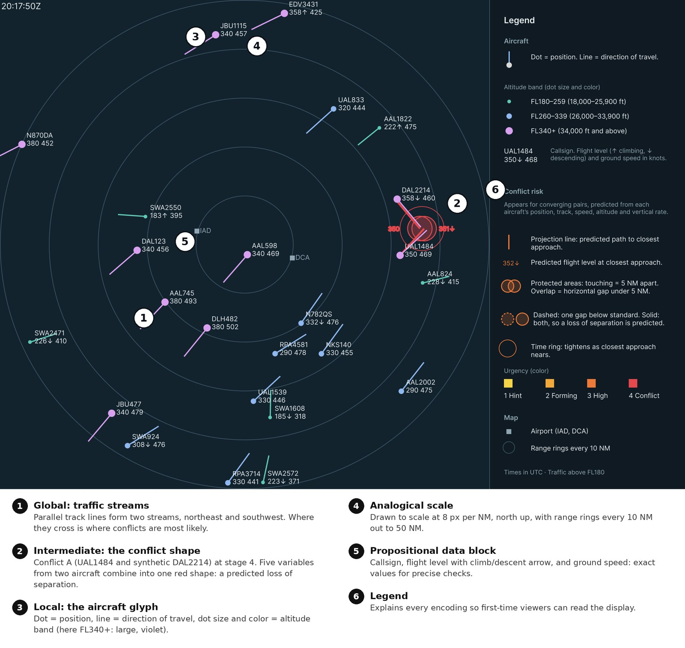
All three levels of emergent features are visible at once: where traffic is, where risk is, and the details of each aircraft.
From Traffic Picture to Conflict Shape
The design went through four iterations over eight days. I first built a baseline scope with no emergent feature, both as the comparison case and as the global and local levels of the final design. The first emergent version then added projection lines, a connector, predicted-altitude tags and a risk zone whose size encoded risk, all in one amber color.
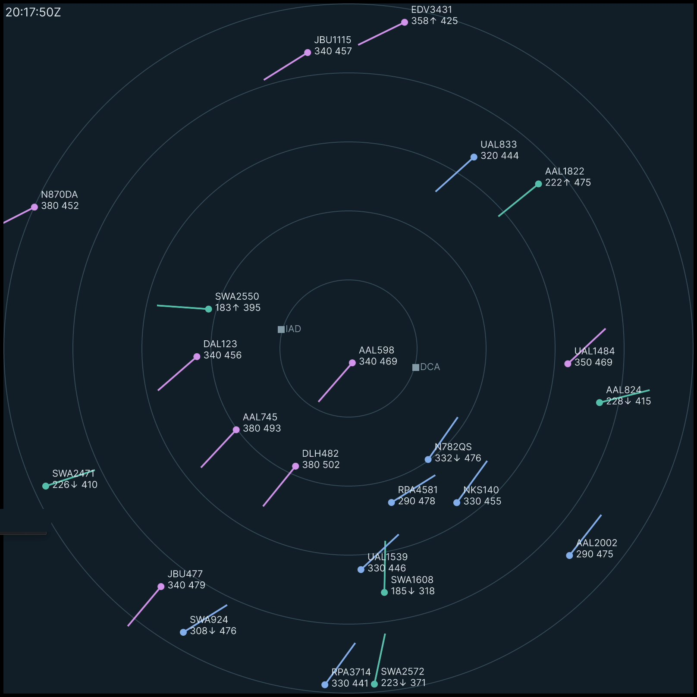
The same moment as the final design. UAL1484 and DAL2214 are about to lose separation, but nothing on screen says so.
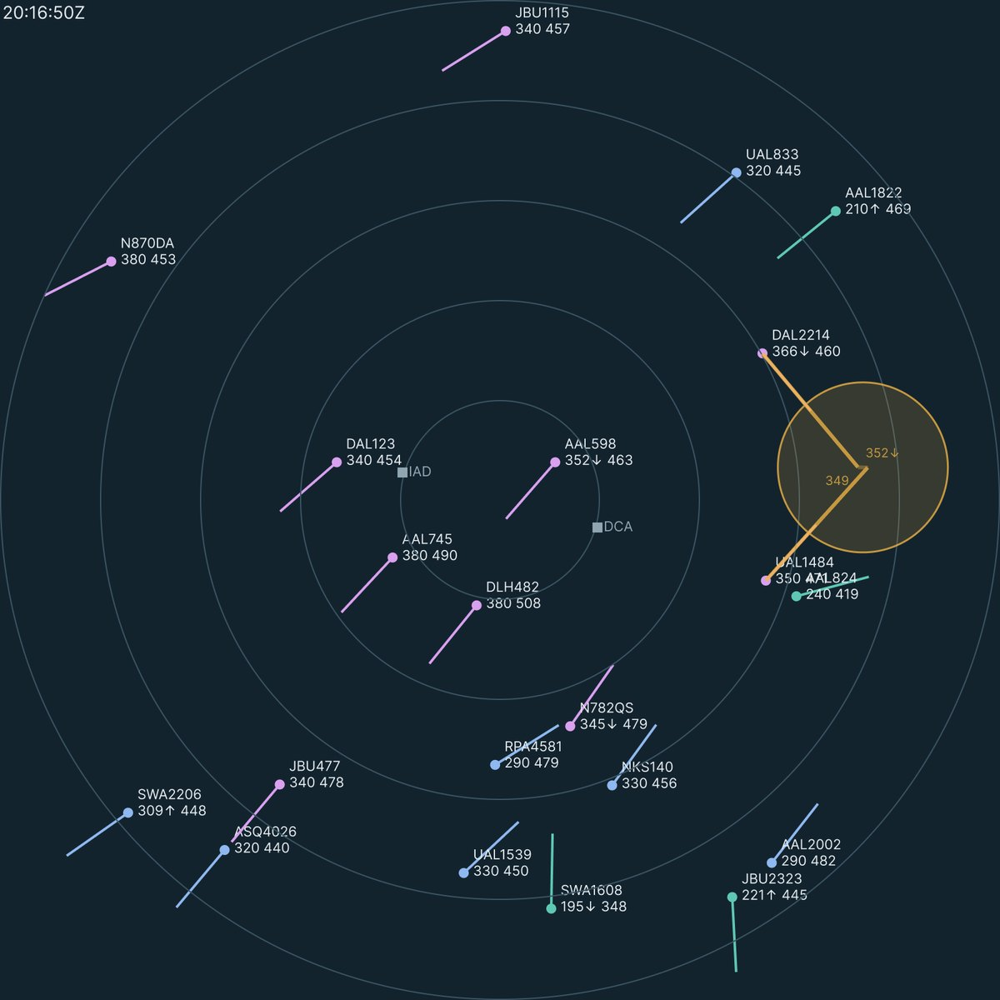
One amber color at every stage, with the zone’s size standing for risk level.
Key Pivots
| Decision | Why |
|---|---|
| Predict the closest approach, rather than stage risk by current distance | Current distance uses only position and altitude. Prediction brings in all five variables and warns minutes earlier. |
| Replace the size-coded zone and connector with 5 NM protected circles | Size meant “risk”, a code viewers had to learn. The circles are the separation standard drawn to scale, which strengthened semantic mapping and analogical form and made the connector redundant. |
| Dashed or solid outline instead of a separate vertical side view | A side view would add an eighth element and duplicate the tags. The outline shows whether one gap or both are below standard. |
| Altitude by line thickness, not line length | On ERAM, vector length conventionally means speed, so longer lines for higher aircraft would send contradictory cues. |
| Invisible copies for fly-ins and fly-outs | Aircraft were appearing and vanishing in place. A 0% copy at each aircraft’s real position in the neighboring frame lets it glide in or out at the scope edge. |
Class Feedback
| Suggestion | What I changed |
|---|---|
| Adopted Change the warning’s color as the conflict gets more urgent, from yellow to red. | Four stage colors (yellow, amber, orange, red), redundant with opacity and ring size. The steps also darken, so they stay distinguishable with red-green color blindness. |
| Adopted Make altitude visible from the symbol itself, through size. | Dot size of 6, 9 and 12 px and line thickness of 1.5, 2 and 2.5 px by altitude band, redundant with color. |
Both suggestions added a second cue to an existing variable rather than a new element, which kept the feature from becoming cluttered.
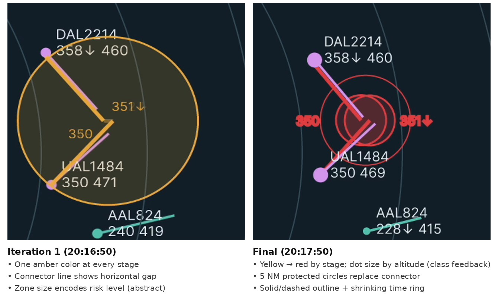
Watching a Conflict Emerge
Step through the seven frames to see Conflict A build from nothing to a predicted loss of separation, and Conflict B appear and resolve.
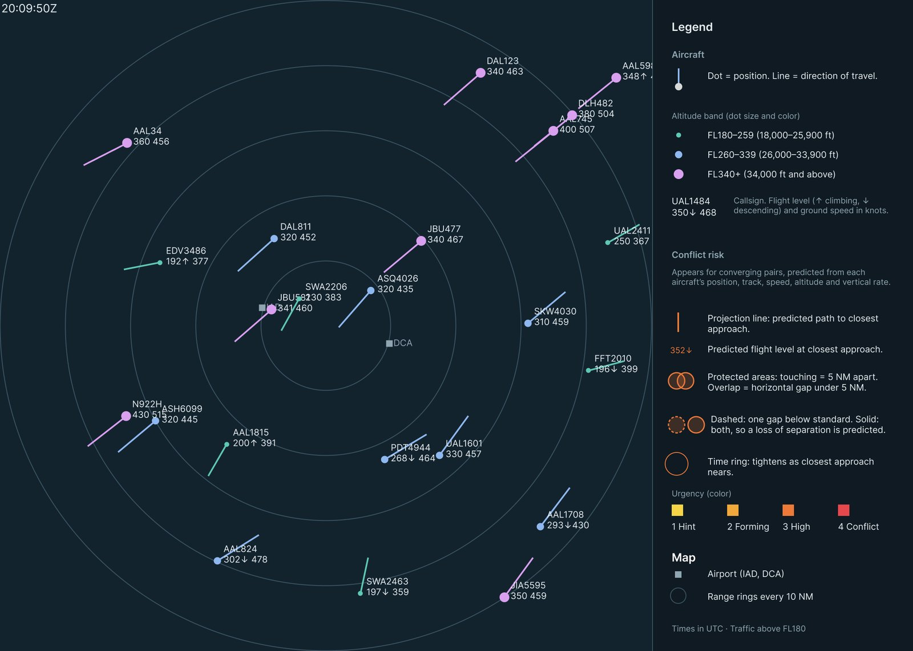
20:09:50 UTC. Traffic only. Two streams cross the scope (northeast and southwest), and no pair is converging closely enough to show risk.
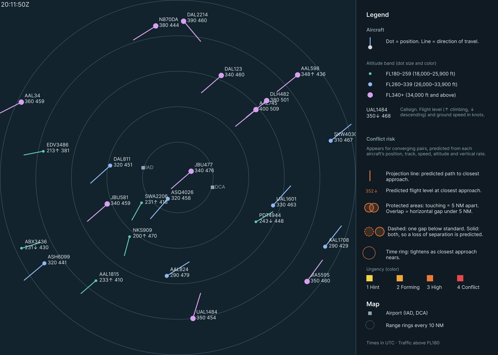
20:11:50 UTC. DAL2214 (synthetic) enters from the top at FL390. Its path will cross UAL1484’s, but it has not started descending, so the predicted vertical gap is too large to count as risk.
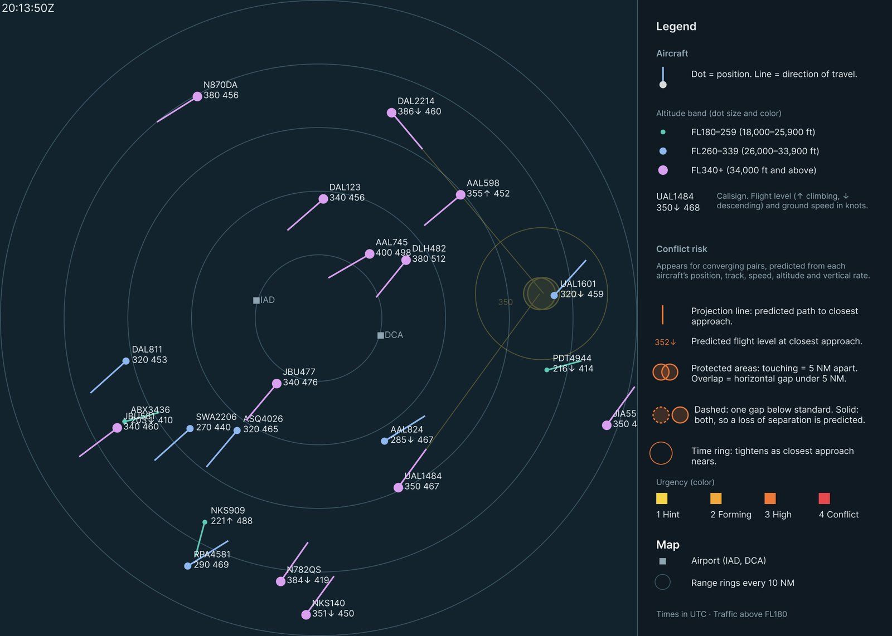
20:13:50 UTC. Stage 1. DAL2214 has begun descending, so the predicted gaps collapse to about 0.6 NM and 220 ft. The feature appears faintly in yellow, about 4 min 50 s before closest approach.
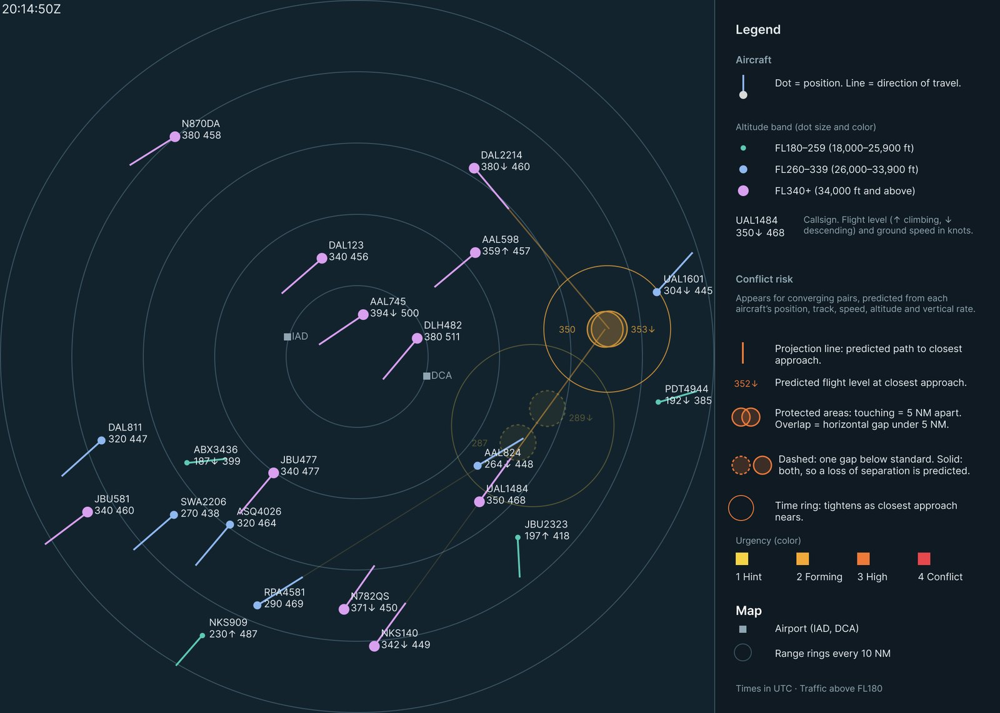
20:14:50 UTC. Conflict A reaches stage 2 (amber). Conflict B appears for NKS140 and RPA4581 at stage 1, with dashed circles that do not overlap.
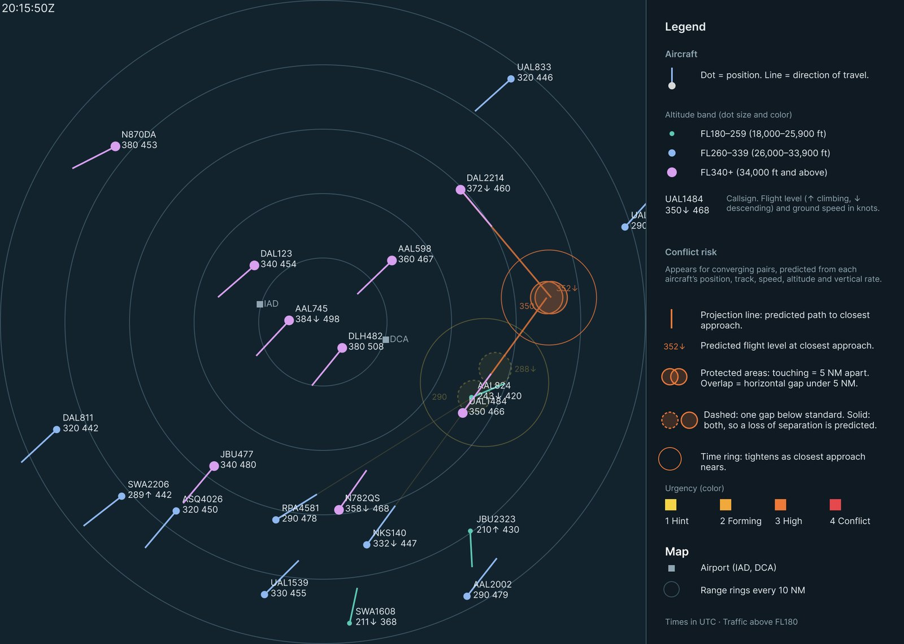
20:15:50 UTC. Conflict A at stage 3 (orange); the time ring has tightened to 118 px. Conflict B holds at stage 1: its vertical gap is closing, its horizontal gap is not.
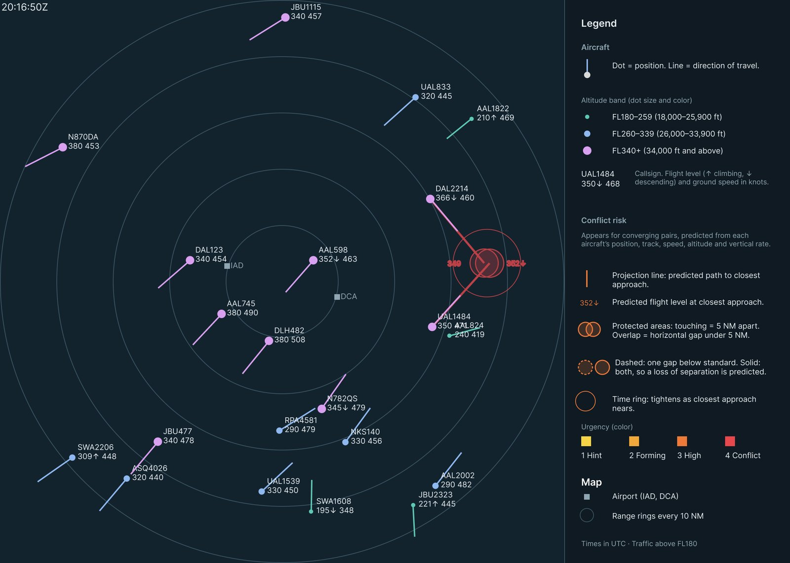
20:16:50 UTC. Conflict A at stage 4: a predicted loss of separation, about 1 min 55 s ahead. Conflict B has faded as RPA4581 keeps descending.
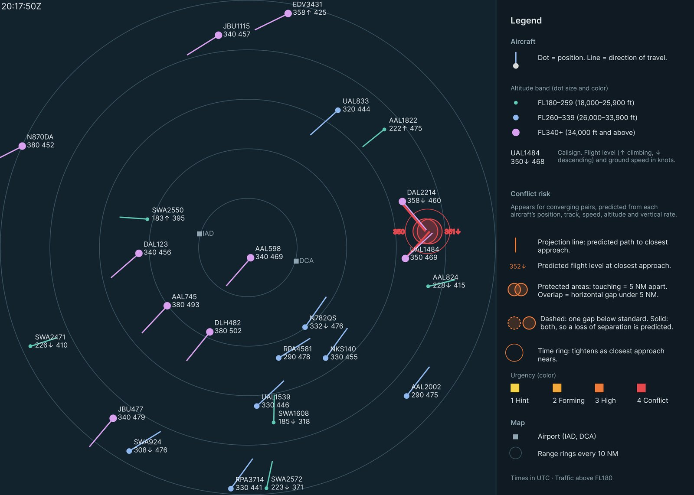
20:17:50 UTC. Stage 4, 56 seconds before closest approach. The circles overlap with a solid outline, and the ring is nearly closed around them.
Conflict A: A Conflict That Builds
UAL1484 (real) heads northeast at FL350 while DAL2214 (synthetic) heads southeast and descends from FL390. Their predicted paths meet less than 1 NM and a few hundred feet apart.
| Frame (UTC) | Stage | Time to closest approach | Predicted gaps |
|---|---|---|---|
| 20:13:50 | 1 · hint | 4 min 50 s | 0.6 NM, 220 ft |
| 20:14:50 | 2 · forming | 3 min 50 s | 0.5 NM, 220 ft |
| 20:15:50 | 3 · high | 2 min 50 s | 0.6 NM, 220 ft |
| 20:16:50 | 4 · predicted loss | 1 min 55 s | 0.9 NM, 260 ft |
| 20:17:50 | 4 · predicted loss | 56 s | 0.8 NM, 150 ft |
Stage 4 arrives about as early as ERAM’s 2.5-minute Conflict Alert would. Stages 1 to 3 add about three minutes of earlier, gradual warning.
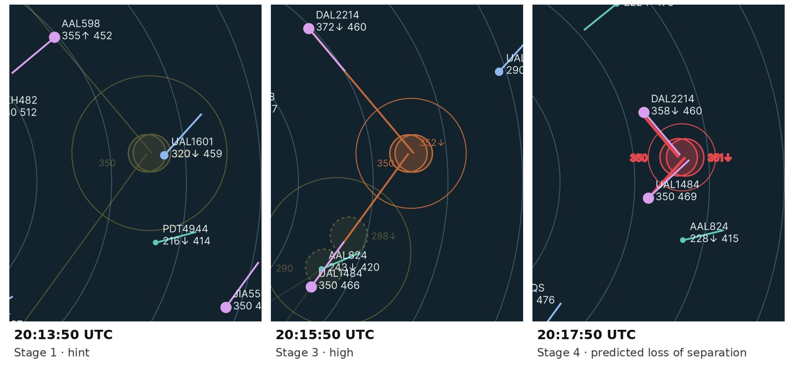
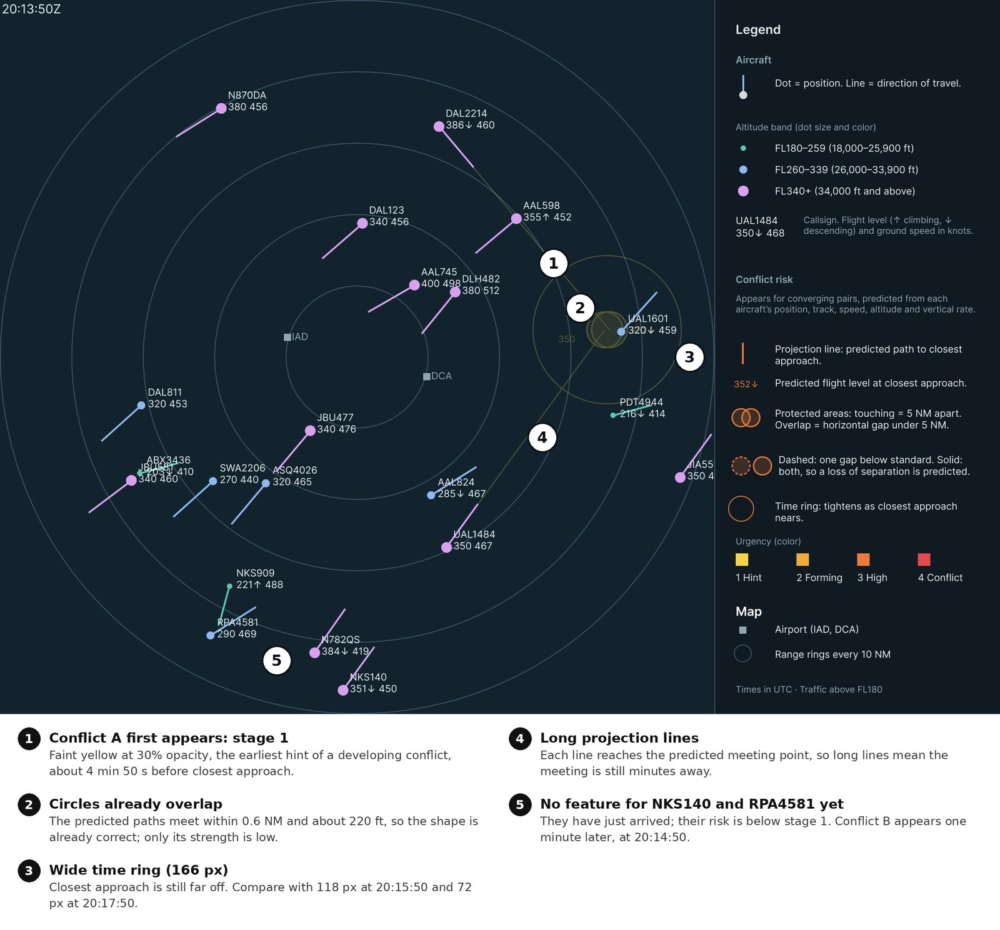
The warning starts early and faint: the shape is already correct, and only its strength is low.
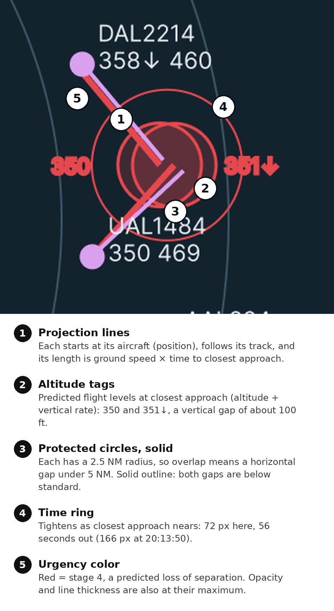
Every one of the five variables is traceable within one shape.
Conflict B: A Risk That Resolves
RPA4581 overtakes NKS140 while descending through its altitude. The predicted vertical gap is only about 200 ft, but the horizontal gap stays about 5.4 NM, just above the standard. The feature stays at stage 1, with dashed circles that never overlap, then fades by 20:16:50 as RPA4581 keeps descending.
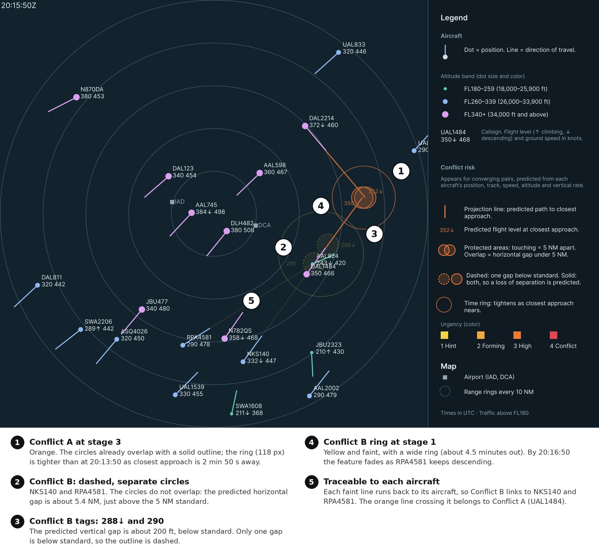
From shape alone, a viewer can tell that Conflict B is closing vertically but not horizontally, while Conflict A is closing in both.
Extending What Controllers Already Use
The design starts from two ERAM tools, the Conflict Alert and the distance reference indicator (DRI) ring, and goes past both.
| ERAM Conflict Alert | ERAM DRI ring | This design | |
|---|---|---|---|
| Trigger | Automatic, about 2.5 min ahead | Manual, per aircraft | Automatic, up to 7 min ahead |
| Signal | Data blocks flash | Fixed ring | Builds through four stages |
| Shows where | No | Current position only | Predicted meeting point |
| Vertical gap | Read from data blocks | Not shown | Altitude tags and outline style |
| Shows why | No | Horizontal distance only | Traceable to all five variables |
| Resolution | Alert stops | Not shown | Feature visibly fades |
What is new: the shape sits at a place that does not exist yet, the predicted meeting point, and it is graded, so a controller sees a conflict forming rather than a threshold being crossed. The closing ring turns time remaining into a shape.
Limitations & Next Steps
The biggest lesson was that a good emergent feature has to mean something in the domain. My first risk zone was visually striking but abstract; redrawing it as the separation standard itself made the shape explain the conflict instead of just flagging it. Building it in Figma also taught me how much structure animation depends on: Smart Animate only works when every layer is named and nested identically across frames.
Limitations
Motion is straight-line between frames 1 to 2 minutes apart. The prediction assumes steady track, speed and vertical rate. Only two conflicts are shown, one with a synthetic aircraft. Tracks are referenced to true north rather than magnetic north.
Next steps
Test the display with several simultaneous conflicts to check clutter. Build a continuously updating version in code. Run user testing against a flashing data block, measuring detection time and accuracy.
Sources
- Bennett, K. B., & Flach, J. M. (2011). Display and interface design: Subtle science, exact art. CRC Press.
- Federal Aviation Administration. (n.d.). Section 13. Automation: En route. In Air traffic control (JO 7110.65). https://www.faa.gov/air_traffic/publications/atpubs/atc_html/chap5_section_13.html
- Schäfer, M., Strohmeier, M., Lenders, V., Martinovic, I., & Wilhelm, M. (2014). Bringing up OpenSky: A large-scale ADS-B sensor network for research. In Proceedings of the 13th International Symposium on Information Processing in Sensor Networks (pp. 83–94). IEEE. https://doi.org/10.1109/IPSN.2014.6846743
- The OpenSky Network. (2019). Historical state vector data: States 2019-07-01, 20:00 UTC [Data set]. https://opensky-network.org
- vNAS Documentation Team. (n.d.). ERAM. vNAS Documentation. https://docs.virtualnas.net/crc/eram/
- Wickens, C. D., & Carswell, C. M. (1995). The proximity compatibility principle: Its psychological foundation and relevance to display design. Human Factors, 37(3), 473–494. https://doi.org/10.1518/001872095779049408
Flight data from the OpenSky Network, cited as its license requests. DAL2214 is a synthetic aircraft added for demonstration; all other aircraft are real.